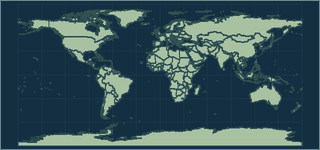

Maps, learning & embedded interfaces
A world atlas.
A badge-sized interface.
Explore countries and U.S. places, find their capitals on offline maps, and test what you remember with a short quiz.

Explore
Maps and lists that stay together.
Start with a readable list, open the selected place on a map, then read its detail card. Move between world, continent and regional pages, including locators for small islands and an Antarctica explanation page.
The United States scope includes all 50 states, Alaska and Hawaii map pages, the five inhabited territories and Washington, D.C. Territories and the federal district keep their correct labels.
Quiz
Five questions, then keep going.
Choose Random or Alphabetical order independently for World and United States. Each short round continues the same pass, so the full selected pool is reachable without repeating questions before exhaustion.
Four choices stay readable, answers remain hidden until checking, and feedback explains capital roles where a generic question would be misleading. Results show the score and missed answers. Browser settings and progress are separate from the physical badge.
Interactive badge app
Open the functional 3D badge.
Use the actual Universe badge's buttons and touch pads to explore the atlas and play a round. The model keeps its existing Mona artwork and GitHub logo; the display runs the existing Capitals app.
Data and evidence
A defined catalog, with sources.
The dated World catalog covers 193 UN member states and two observer states. The U.S. pool contains 56 places. Proper names, capital-role questions and source notes come from the existing badge catalog, dated October 29, 2026.
GeoNames data retains its CC BY attribution; map pages are built from Natural Earth public-domain geography. Existing host tests check complete coverage, quiz sequences, persistence migration, map locators and layout. The browser review is separate from physical badge acceptance.
Get in touch
Let’s talk engineering.
For engineering roles, freelance projects, or questions about this work, email me or connect on LinkedIn.
Résumé available on request.